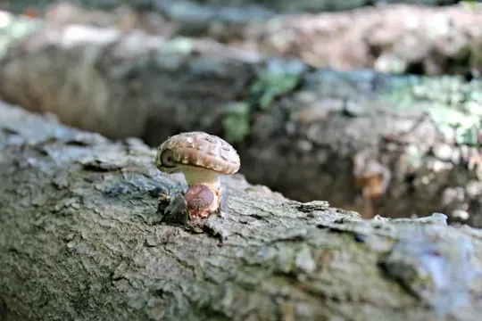

Shiitake mushrooms are one of the most popular edible mushrooms in the world, and for good reason. They have a rich, earthy flavor and a meaty texture that makes them a delicious and versatile ingredient in many dishes. But did you know that shiitake mushrooms are also packed with nutrients?
Organic oak log forest grown shiitake mushrooms are particularly nutritious, as they are grown in a natural environment without the use of pesticides or herbicides. This means that they are not only delicious, but also good for you.
Health benefits of organic oak log forest grown shiitake mushrooms:
- They are a good source of protein and fiber.
- They contain vitamins B and D, as well as minerals such as copper and selenium.
- They have been shown to boost the immune system, reduce inflammation, improve heart health, and protect against cancer.
- In addition to their health benefits, organic oak log forest grown shiitake mushrooms are also a sustainable choice. They are grown on hardwood logs, which are a renewable resource. And, since they are grown outdoors, they require less energy and water than mushrooms grown in greenhouses.
How to enjoy organic oak log forest grown shiitake mushrooms:
Organic oak log forest grown shiitake mushrooms can be enjoyed in a variety of ways. They can be stir-fried, grilled, roasted, or sautéed. They can also be added to soups, stews, pasta dishes, and other main courses. Shiitake mushrooms can also be dried and used in powder form in sauces, marinades, and other recipes.
Here is a simple recipe for sautéed organic oak log forest grown shiitake mushrooms:
Ingredients:
- 1 pound organic oak log forest grown shiitake mushrooms, stems removed and sliced
- 1 tablespoon olive oil
- 1/2 teaspoon salt
- 1/4 teaspoon black pepper
Instructions:
- Heat the olive oil in a large skillet over medium heat.
- Add the shiitake mushrooms and cook until they are softened and browned, about 5 minutes.
- Season with salt and pepper to taste.
- Serve immediately.
Enjoy the delicious and nutritious taste of organic oak log forest grown shiitake mushrooms!